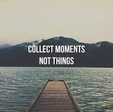

"Se trata de eliminar todas las cosas que nos distraen de aquello que es importante en nuestras vidas".
"Un estilo de vida minimalista implica ser consciente de las cosas que poseemos, las cosas que compramos y cómo invertimos nuestro tiempo", afirma Francine Jay, la autora de The Joy of Less.